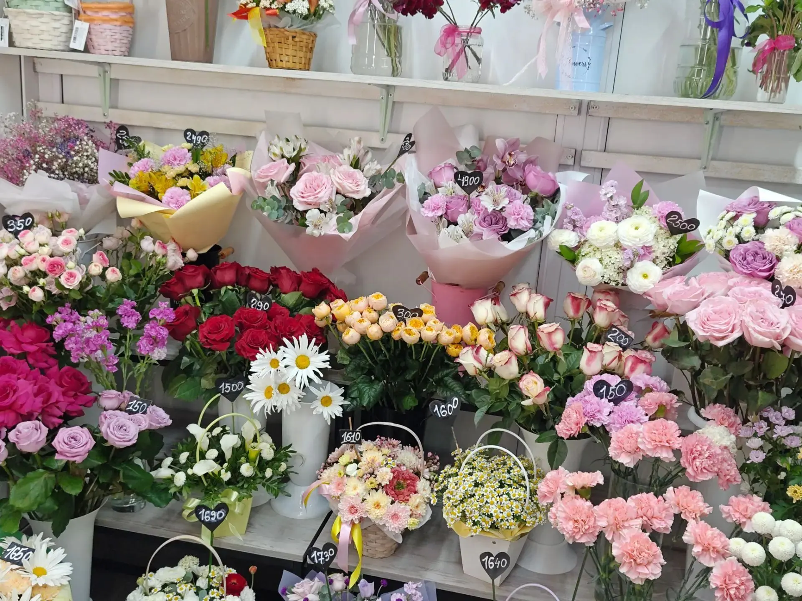
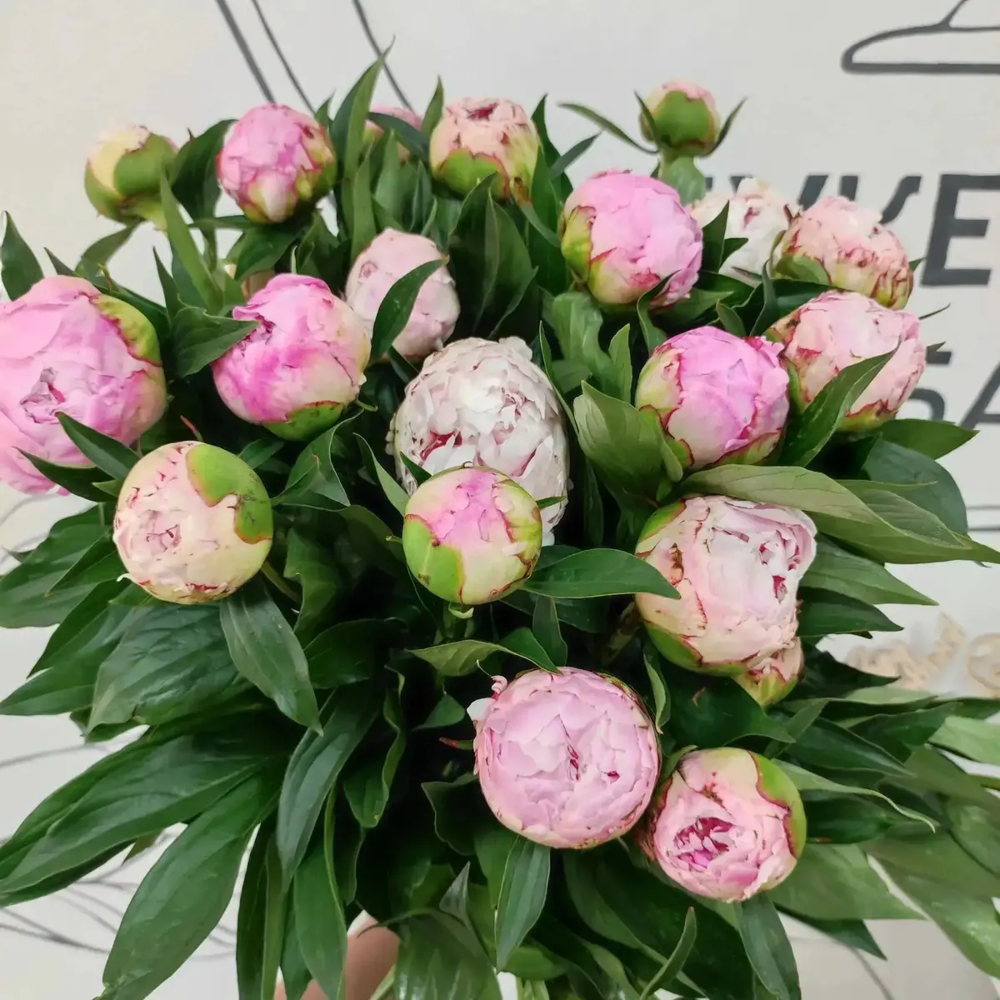
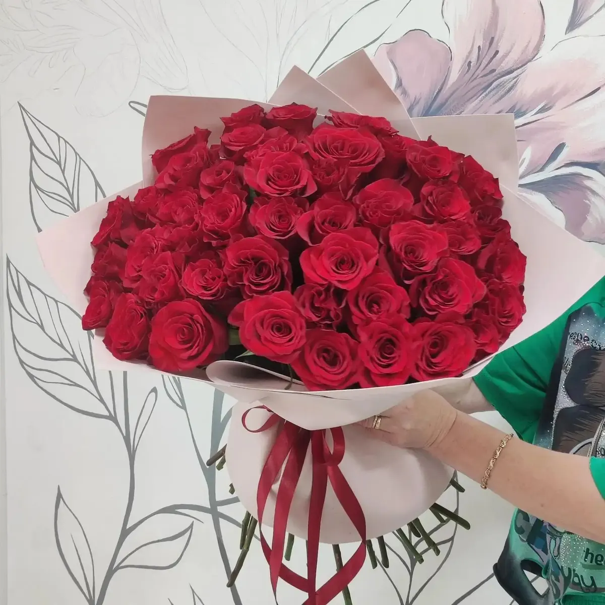
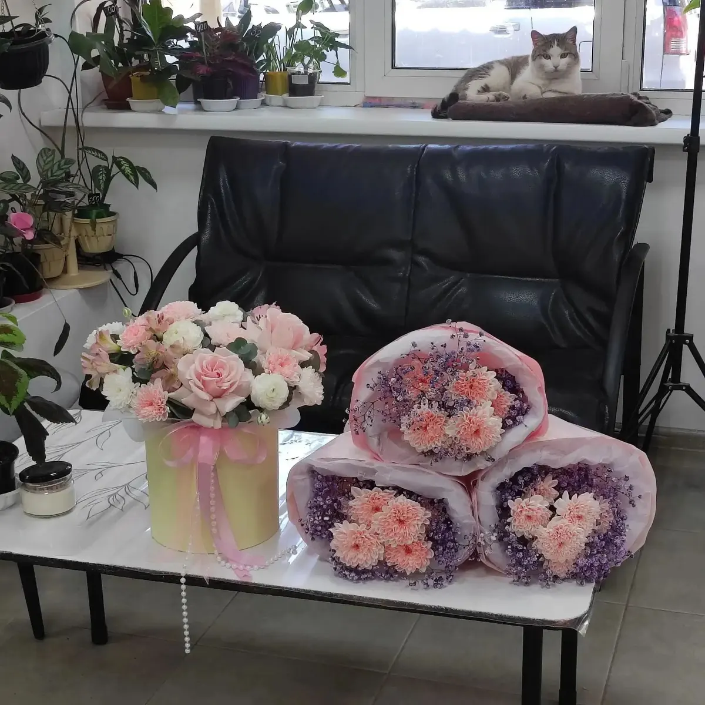

Цветочный магазин · Павловский тракт
Букеты и цветочные композиции в Барнауле
Уютный цветочный на Павловском тракте. Флористы помогут определиться с образом букета, соберут под ваш бюджет и организуют доставку.
- Открыты ежедневно с 9 до 20
- Свадебные букеты и бутоньерки
- Доставка и самовывоз

Что входит
Входит
- Подбор образа букета с флористом
- Сборка с учётом пожеланий
- Подарочная упаковка
Отдельно, если нужно
- Доставка – по тарифу
- Свадебная флористика – отдельный заказ
Цены
Цен на карточке пока нет. Состав и стоимость называем при заказе, до оплаты.
Букеты
- Букет на заказпо вашему бюджету и пожеланиямуточнить
- Композиция в коробке или корзинеуточнить
- Букет невестыуточнить
- Бутоньеркауточнить
Доставка
- Доставка по городууточнить
- СамовывозПавловский тракт, 76Буточнить
Подарочные сертификаты, кашпо, сухоцветы и гелиевые шары – в магазине.
Как заказать
- 01
Напишите повод
В Telegram или по телефону.
- 02
Определитесь с образом
Флорист поможет с идеей и составом.
- 03
Согласуйте бюджет
Соберём так, чтобы уложиться в сумму.
- 04
Получите
Заберите в магазине или закажите доставку.



Что говорят клиенты
Свежие цветы
Клиенты пишут, что цветы долго стоят.
Помощь флориста
Помогают определиться с образом и уложиться в бюджет.
Свадебная флористика
Собирают букеты невест и бутоньерки.
Уютный магазин
Можно прийти с собакой, в магазине живёт кот.
Отзывы с Яндекс.Карт
«Хочу выразить благодарность) заказывала букет невесты и бутоньерку. Девушки помогли определиться с образом букета, собрали нежнейший букет и гармоничную бутоньерку!»
Ангелина С · 28 июля
«Люблю этот цветочный, не первый раз беру. В нем прекрасно всё : расположение, ассортимент, цены, персонал, всё так уютно и со вкусом.»
dianagolde · 26 июня
«Потрясающий магазин. Цветы очень долго стоят. Берем каждый месяц букетик дочери💞»
Анастасия Стахнева · 21 сентября
Отзывы с карточки на Яндекс.Картах, без правок.
Частые вопросы
Не знаю, какие цветы выбрать
Напишите повод и бюджет – флорист поможет с образом.
Можно заказать букет невесты?
Да, собирают букеты невесты и бутоньерки.
Есть доставка?
Да. Стоимость и время называем при заказе.
Как оплатить?
СБП, картой, наличными, безналичный расчёт (по карточке на Картах).
Напишите повод и бюджет
- Адрес
- Павловский тракт, 76Б, Барнаул
- Часы
- Ежедневно 09:00–20:00
- Телефон
- +7 (953) 038-98-86